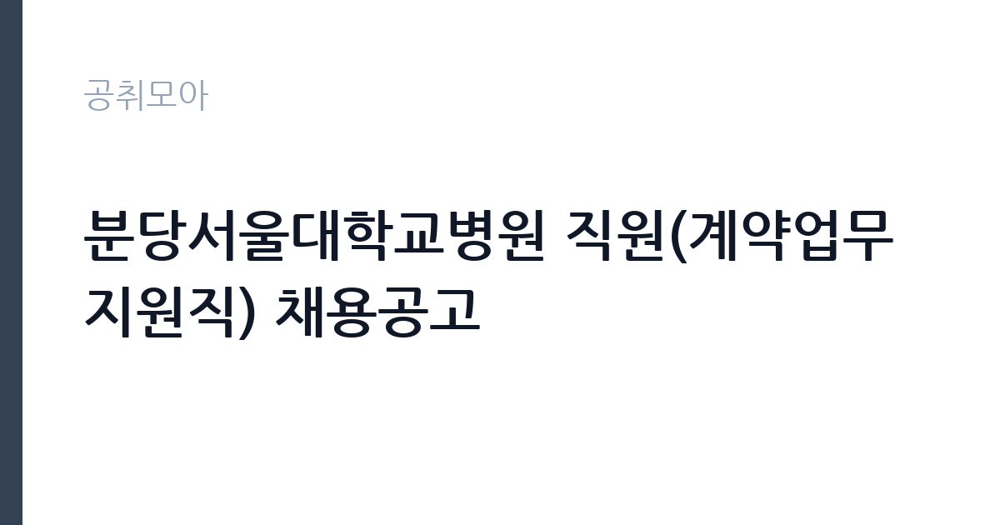

[공공기관] 분당서울대학교병원 직원(계약업무지원직) 채용공고
분당서울대학교병원 · 경기 · 마감 2026-11-05 (D-9) · 출처 잡알리오

한눈에 보는 모집 조건
| 기관 | 분당서울대학교병원 |
|---|---|
| 공고명 | 분당서울대학교병원 직원(계약업무지원직) 채용공고 |
| 고용형태 | 기간제 |
| 근무지 | 경기 |
| 게시일 | 2026-10-28 |
| 마감일 | 2026-11-05 (D-9) |
지원자격, 이렇게 읽으세요
- 공공기관 채용공시
- 세부 조건은 원문 공고문 확인
기간제 근로자는 근로계약 기간이 정해진 신분입니다. 계약 기간과 갱신 가능 여부가 근로계약서에 명시되며 기간 만료 시 근로관계가 종료됩니다. 결원 보충이나 특정 사업 기간에 맞춰 채용되는 경우가 많아 업무 범위가 명확합니다. 이번 공고는 분당서울대학교병원가 직접 진행하는 자체 전형입니다. 응시 자격은 공고문의 모집분야별 요건을 기준으로 판단해야 합니다. 같은 공고 안에서도 직무에 따라 학력·전공·경력 요건이 다르게 적용되므로, 본인이 지원할 분야의 요건을 정확히 확인하십시오. 경력은 증명서로 입증해야 하고, 자격증 사본과 졸업증명서가 기본 제출서류로 붙습니다. 우대 사항은 가점으로 반영되므로 해당 여부를 확인해 증빙을 첨부해야 합니다. 결격사유 조회와 신원 확인 절차가 공통으로 적용됩니다. 경력 인정 여부는 증명서 기재 내용으로 결정되므로 직무 기술을 상세히 요청하십시오. 응시 자격 판단이 애매하다면 접수 전에 채용 담당 부서로 문의하는 편이 안전합니다. 서류 제출 후에는 소명 기회가 없습니다. 경력 요건은 총 경력이 아니라 해당 직무 경력만 인정하는 경우가 있으니, 증명서의 직무 기술을 함께 확인하십시오. 이 공고 원문에 적힌 응시 조건 문구는 '응시자격 및 자격요건 : [필수] 의료기관 또는 기업체(기관 또는 단체 포함) 근무 경험자' / '응시자격 및 자격요건 : [필수] 의료기관 또는 기업체(기관 또는 단체 포함) 근무 경험자' / '응시자격 및 자격요건 : [필수] 의료기관 또는 기업체(기관 또는 단체 포함) 근무 경험자'입니다. 문구를 그대로 읽고 본인 해당 여부를 하나씩 표시해 두면 서류 단계에서 탈락하는 일을 줄일 수 있습니다.
이 공고의 포인트
이 건은 분당서울대학교병원가 같은 시기에 낸 4개 모집분야 가운데 일반 사무·운영 직무입니다. 다른 직무 공고와 요건이 다르므로 지원 전에 모집분야 표를 대조해야 합니다. 이 공고의 첫 번째 포인트는 고용 형태입니다. 계약 기간이 정해져 있어 근무 종료 시점이 명확합니다. 그만큼 짧은 기간에 어떤 실적을 남길지가 중요해집니다. 두 번째는 업무 범위가 명확하다는 점입니다. 일반 사무·운영 직무로 채용되므로 배치 이후 담당 업무가 크게 흔들리지 않습니다. 세 번째는 근무지입니다. 경기 지역 근무로 접근성은 좋지만 그만큼 지원자가 몰리는 지역이므로 경쟁률을 넉넉히 잡아야 합니다. 처우와 근무 형태가 표로 정리되어 있어 비교해 보기에 편한 공고입니다. 같은 직무로 함께 올라온 공고 12건 가운데 마감이 중간에 위치하므로 다른 공고와 일정이 겹치는지 확인하십시오. 선발 인원은 공고문에 명시되어 있으니 모집분야 항목을 함께 확인하십시오.
전형은 어떻게 진행되나
1차 서류, 2차 면접의 2단계로 진행되는 구성이 일반적입니다. 서류에서는 자격 요건과 경력 증빙을 확인하고, 면접에서는 실제 업무 수행 능력과 조직 적응을 봅니다. 직무에 따라 필기시험이나 실기, 컴퓨터 활용 시험이 추가되기도 하므로 공고문의 전형표를 먼저 확인하십시오. 단계별로 합격자만 다음 전형에 응시할 수 있고, 단계마다 응시 자격 확인 서류를 다시 제출해야 하는 경우가 있습니다. 최종합격자 발표 후에는 신원조회와 채용 신체검사가 남아 있습니다. 전형 일정이 공고문에 날짜로 명시되어 있으니 달력에 옮겨 두고 준비하십시오.
원문에서 확인한 전형 방식
1. 모집분야, 인원 및 응시요건 - 분야 : 외래업무지원 - 모집인원 : 1명 - 응시자격 및 자격요건 : [필수] 의료기관 또는 기업체(기관 또는 단체 포함) 근무 경험자 ※ 배치 예정 부서 : 특수검사부 2. 모집분야, 인원 및 응시요건 - 분야 : 수납예약 - 모집인원 : 1명 - 응시자격 및 자격요건 : [필수] 의료기관 또는 기업체(기관 또는 단체 포함) 근무 경험자 ※ 배치 예정 부서 : 원무팀 3. 모집분야, 인원 및 응시요건 - 분야 : 주차 - 모집인원 : 1명 - 응시자격 및 자격요건 : [필수] 의료기관 또는 기업체(기관 또는 단체 포함) 근무 경험자 ※ 배치 예정 부서 : 총무팀 4. 모집분야, 인원 및 응시요건 - 분야 : 린넨 - 모집인원 : 1명 - 응시자격 및 자격요건 : [필수] 의료기관 또는 기업체(기관 또는 단체 포함) 근무 경험자 ※ 배치 예정 부서 : 물류자산팀 5. 모집분야, 인원 및 응시요건 - 분야 : 소방 - 모집인원 : 1명 - 응시자격 및 자격요건 : [필수] 소방안전관리자(1급) 이상 자격증 소지자 ※ 배치 예정 부서 : 시설팀 ※ 시차출퇴근 및
이런 분께 추천해요
- 공고 모집분야의 요건을 충족하는 분
- 사무와 현장 업무를 함께 수행할 수 있는 분
- 부서 배치와 업무 조정을 수용할 수 있는 분
지원 전 체크리스트
- 응시자격 요건과 경력 기준을 충족하는가 — 경력은 증명서로 입증해야 합니다
- 계약 기간과 근무 시작일·종료일을 확인했는가
- 제출서류 목록을 모두 준비했는가 — 누락 시 서류 단계에서 탈락합니다
- 접수 마감 2026-11-05 이전에 접수 방식을 확인해 제출했는가
모집 일정과 제출 타이밍
공고 게시일은 2026-10-28, 접수 마감은 2026-11-05입니다. 준비 기간은 약 8일로 서류 준비와 자격 증빙을 함께 처리하기에는 넉넉하지 않은 편입니다. 첫 이틀 안에 공고문과 첨부 서식을 내려받아 요건을 확인하고 남은 기간에 증빙 서류를 발급받는 일정이 현실적입니다. 면접은 서류 합격자 발표 후 짧은 간격으로 진행되는 경우가 많으므로 서류 제출과 동시에 면접 준비를 시작하는 편이 안전합니다. 마감일에는 접수 시스템이 몰리므로 하루 전까지 제출을 마치는 것이 좋습니다. 서류 발표일과 면접일 사이가 짧은 경우가 많아 면접 준비는 접수와 동시에 시작하는 편이 좋습니다.
직무 이해하기: 공공기관
교육기관은 학교 교육과 교원 연수, 교육 행정을 담당합니다. 교육청은 관내 학교를 지원하고, 대학은 학사와 연구, 학생 지원 업무를 운영합니다. 예산과 인사 규정이 교육부 지침과 자체 규정을 함께 따르므로 절차가 엄격합니다. 이 공고는 제목에 직무가 구체적으로 드러나지 않아 모집분야 항목으로 업무를 확인해야 합니다. 일반적으로는 부서에 배치되어 사무 업무와 현장 지원 업무를 함께 맡습니다. 사무 쪽은 문서 작성과 자료 정리, 예산 집행 보조, 민원 응대가 중심이고, 현장 쪽은 시설 확인과 운영 지원, 행사 준비가 중심입니다. 배치 부서에 따라 업무 비중이 크게 달라지므로 면접에서 희망 분야를 밝히는 것이 좋습니다. 구체적인 직무 내용은 공고문의 모집분야 또는 직무기술서에서 확인하십시오. 업무 도구와 장비는 기관이 지급하며, 지급 품목과 교체 주기는 부서 규정을 따릅니다. 현장 업무와 사무 업무의 비중은 기관의 사업 일정에 따라 계절별로 달라집니다. 이 건의 근무 대상 지역·부서는 원문 기준 '계약업무지원직'입니다 원문에 '응시자격 및 자격요건 : [필수] 의료기관 또는 기업체(기관 또는 단체 포함) 근무 경험자'라는 조건이 명시되어 있습니다.
자기소개서 작성 팁
지원서는 모집분야를 명확히 밝히고 그 분야에 맞는 경험을 앞세우는 것이 중요합니다. 사무직을 지원한다면 문서 작성과 데이터 정리 경험을, 운영직을 지원한다면 현장 대응 경험을 중심에 두십시오. 기관의 사업을 조사해 어떤 부서에서 일하고 싶은지 구체적으로 쓰면 준비도가 드러납니다. 여러 분야에 두루 걸친 추상적인 서술은 피하십시오. 직무 경험이 많지 않다면 경험의 양보다 과정을 구체적으로 쓰는 편이 낫습니다. 어떤 상황에서 무엇을 판단했고 어떤 결과가 나왔는지 순서대로 서술하면 신뢰가 생깁니다. 지원 동기와 기여 방안은 한 문단씩 짧게 유지하고, 가장 자신 있는 경험에 분량을 몰아주십시오. 마지막 문장은 포부보다 구체적인 실행 계획으로 끝내는 것이 좋습니다.
면접 준비 포인트
면접에서는 지원 분야에 대한 이해와 업무 처리 방식을 확인합니다. 여러 직무 중 왜 해당 분야를 선택했는지, 맡은 업무를 어떤 순서로 처리할지 묻습니다. 부서 이동이 가능한지에 대한 질문도 자주 나오므로 솔직하게 답하십시오. 사무 경험이 있다면 문서 작성과 엑셀 활용 사례를, 현장 경험이 있다면 안전 관리와 협업 사례를 준비하십시오. 면접 당일 신분증과 제출서류 원본을 요구하는 경우가 있으니 공고문의 준비물 목록을 확인하십시오. 모르는 질문에 추측으로 답하면 감점 요인이 되므로, 확인 후 답하겠다고 밝히는 편이 안전합니다.
급여·근무조건 읽는 법
알리오(공공기관 경영정보 공개시스템) 2025년 결산 경영공시 기준으로 분당서울대학교병원 일반정규직 1인당 평균보수액은 None, 공시된 신입사원 초임은 4,459만원입니다. 평균보수액은 기본급에 고정수당·실적수당·성과상여금·급여성 복리후생비를 모두 합산한 값이라 월 기본급만 보고 판단하면 실제와 크게 어긋납니다. 이번 공고는 기간제 채용이라 위 정규직 평균보수는 그대로 적용되지 않습니다. 기간제 보수는 기관의 기간제 임금 기준을 따르며 계약 기간이 함께 정해집니다. 보수는 채용 신분과 기관 임금 규정에 따라 정해집니다. 공무직과 기간제는 기관 임금표를, 임기제공무원은 연봉등급제를 적용받습니다. 공고문에 금액이 제시되지 않은 경우에는 처우 항목이나 첨부된 보수표를 확인해야 합니다.수당과 상여 포함 여부에 따라 실수령액이 달라집니다. 2026년 적용 최저임금은 시급 10,320원, 월 환산 2,156,880원(주 40시간·209시간 기준)입니다. 고용노동부 고시 제2025-47호로 확정된 금액입니다. 공고문에 금액이 제시되지 않은 항목은 원문 보수표나 처우 설명에서 확인해야 하며 확인되지 않은 수치는 쓰지 않는 것이 원칙입니다. 비교할 때는 월 급여뿐 아니라 상여·명절휴가비·복지포인트·초과근무수당까지 포함한 연간 총액으로 계산하십시오. 기간제라면 계약 기간 동안의 총액을, 무기계약이라면 호봉 상승과 정년까지의 누적 소득을 기준으로 판단하는 편이 정확합니다.
자주 묻는 질문
- 선발 인원은 몇 명인가요?
공고문의 모집분야 항목에 직종별 인원이 표로 제시되어 있습니다. 첨부된 공고문 원문에서 확인하십시오. - 근무지는 어디인가요?
경기 지역의 분당서울대학교병원 소속 근무지입니다. 세부 주소와 출퇴근 조건은 원문 공고문에서 확인할 수 있습니다. - 보수는 얼마인가요?
채용 신분(기간제)과 기관 임금 규정에 따라 정해지며 구체적인 금액은 공고문 처우 항목에 제시됩니다. 금액이 공개되지 않은 경우에는 원문의 보수표를 확인하십시오.
함께 보면 좋은 공고
[공공기관] 2026년도 제3회 신입직원 공개채용 — 마감 2026-11-18[공공기관] 2026년 독립기념관 하반기 직원 채용공고 — 마감 2026-11-12[공공기관] 한국폴리텍대학 전남캠퍼스 행정지원직(휴직대체) 채용 공고 — 마감 2026-11-04출처: 잡알리오 공개정보를 바탕으로 공취모아가 정리한 안내글입니다. 모집 조건·일정은 변경될 수 있으니 지원 전 반드시 원문 공고문을 확인하세요. 본 글은 정보 제공용이며 합격을 보장하지 않습니다.